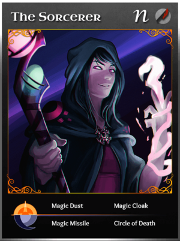

Ah yes. The Sorcerer the manliest class in Throne of Lies.

2 Likes
well I would say from the ground up, yes the sorc’s wincon is too high, the only thing he really does for the game is possibly boost the Unseen/cult winrate by being an NK that can’t kill them. The inq has always been a total disaster IMO (ridiculously high winrate for a class that almost never does his job)
1 Like
But no seriously now. I actually thought that this was supposed to be a bad joke how the Sorcerer is overpowered and I was surprised like what games have you been playing where the Sorcerer always wins lmao?
That would make the Sorcerer boring.
But for serious note, why most people are only reducing NK’s role to murdering 2 main factions?
Just saying.
well obviously we are very far from a situation where the sorc always wins. but that doesn’t change the fact that the sorc does win significantly more than classes in his category.
Is the Sorcerer trans?
And why is this a problem again?
You’re aware of that Sorcerer have easier wincon right?
1 Like
Yeah and they have an useless counterpart to make their experience harder.
1 Like
The useless counterpart is more or less a non-factor. he’s every bit as likely to kill the prince as he is the sorc.
Whatever the case though regardless of discussing the specific why, statistics don’t lie, Sorc is consistantly scoring 13-16% winrates on the dev’s weekly updates, while the reaper 10-12, with the pos 9-10. Sorc having a higher win-chance is an inarguable fact.
1 Like
I’m fine with sorcerer existing as it is, but people believe that a hardcounter is needed since sorcerer can win with evils, but that(nothing does) does not justify a hardcounter.
That doesn’t justify a hardcounter. Inquisitor could be removed and perception could be changed so it can kill evils. Sorcerer could also be given new day abilities. I would be fine with that.
Sorcerer’s win rate is what the NKs win rate should be like though. They should be a threat, and hardcounters are a broken concept. They’re not fun to play as or against and have an easy win con. The other NKs should also be buffed.
What about a class that kills everyone N1 does that need a counter?
3 Likes
Obviously, but that shouldn’t be in the game in the first place. If something needs a hardcounter to balance it then it shouldn’t exist
So what happened to no class deserves a hard counter
But that shouldn’t exist in the first place. A hardcounter would not prevent it from being OP
So? What happened to it 
1 Like
It died N1
2 Likes
Duh
Im sorry BUT HECK NO its already hard enough with a anti magic guy after her she doesn’t need a nerf
2 Likes
What if we all come back to this discussion in a couple weeks
1 Like